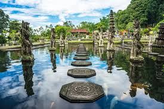

Tirta Gangga adalah taman air kerajaan yang terletak di Kabupaten Karangasem, Bali. Taman ini terkenal dengan arsitektur yang unik, menggabungkan unsur Bali dan Tiongkok. Tirta Gangga memiliki kolam-kolam yang indah, air mancur, dan patung-patung dewa-dewi Hindu. Taman ini dibangun oleh Raja Karangasem, Anak Agung Anglurah Ketut Karangasem Agung, pada tahun 1948.
Tirta Gangga bukan sekadar taman air, tetapi juga tempat yang sakral bagi umat Hindu. Pengunjung bisa berjalan-jalan di sekitar taman air, menikmati keindahan arsitektur, dan berfoto-foto. Tirta Gangga juga menjadi tempat yang tepat untuk bersantai dan menikmati suasana yang tenang. Selain itu, pengunjung juga dapat berenang di kolam-kolam yang airnya berasal dari mata air suci.